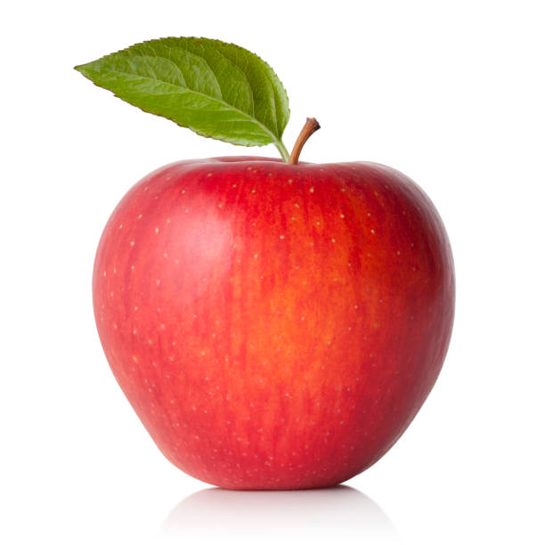
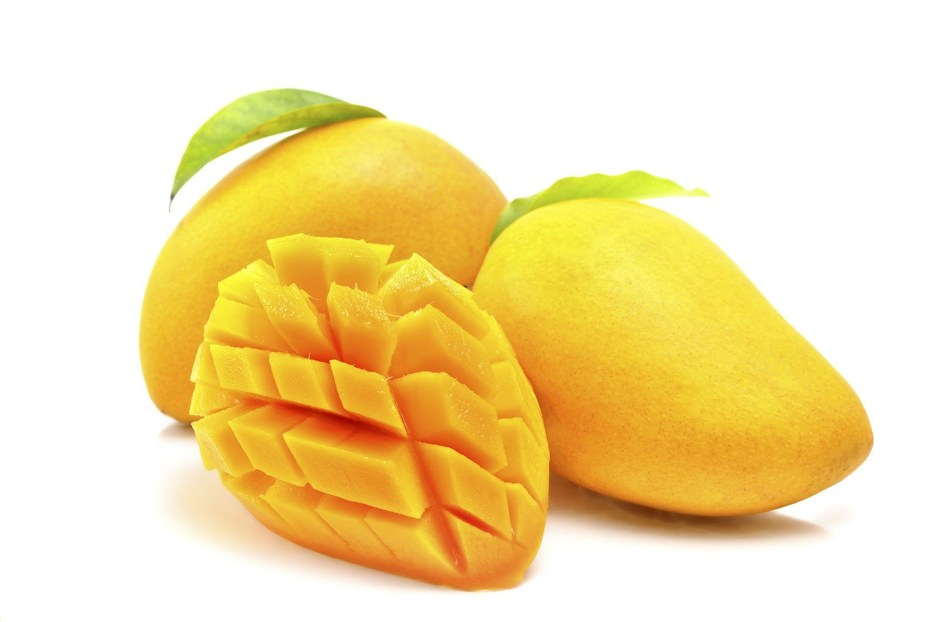
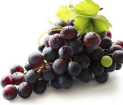

Fruit
Apple
Mango
Grapes
- In botany, a fruit is the seed-bearing structure in flowering plants (also known as angiosperms) formed from the ovary after flowering.
Fruits are the means by which angiosperms disseminate seeds. Edible fruits, in particular, have propagated with the movements of humans and animals in a symbiotic relationship as a means for seed dispersal and nutrition; in fact, humans and many animals have become dependent on fruits as a source of food.
- Apple

-
An apple is a sweet, edible fruit produced by an apple tree (Malus domestica). Apple trees are cultivated worldwide and are the most widely grown species in the genus Malus. The tree originated in Central Asia, where its wild ancestor, Malus sieversii, is still found today. Apples have been grown for thousands of years in Asia and Europe and were brought to North America by European colonists. Apples have religious and mythological significance in many cultures, including Norse, Greek and European Christian tradition.
TOP
- Mango

-
A mango is a juicy stone fruit (drupe) produced from numerous species of tropical trees belonging to the flowering plant genus Mangifera, cultivated mostly for their edible fruit.
Most of these species are found in nature as wild mangoes. The genus belongs to the cashew family Anacardiaceae. Mangoes are native to South Asia,[1][2] from where the "common mango" or "Indian mango", Mangifera indica, has been distributed worldwide to become one of the most widely cultivated fruits in the tropics. Other Mangifera species (e.g. horse mango, Mangifera foetida) are grown on a more localized basis.
TOP
- Grapes

-
A grape is a fruit, botanically a berry, of the deciduous woody vines of the flowering plant genus Vitis.
Grapes can be eaten fresh as table grapes or they can be used for making wine, jam, grape juice, jelly, grape seed extract, raisins, vinegar, and grape seed oil. Grapes are a non-climacteric type of fruit, generally occurring in clusters.
TOP